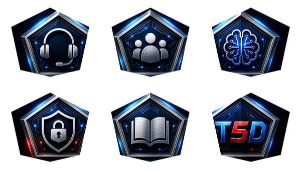

Base first
Base Mainnet is the home network for the T5D token.
How T5D utility connects support quality, provider capacity, and ecosystem participation — a token built around real support activity.


The supplied T5D icon family gives the T5D utility a consistent visual vocabulary: support, community, intelligence, security, education, and the T5D core.

T5D's direction is set: a support-first ecosystem with a token that ties community contribution to the network.
Base Mainnet is the home network for the T5D token.
Expansion to other chains follows as interoperability and security work lands.
Token utility grows with real support activity, so value follows real work.
The proposed model treats the future token as economic glue around support demand, decentralized AI capacity, human quality review, and verified participation.
dApps and communities define support needs through future service arrangements. Pricing, service levels, and settlement assets are set per arrangement.
Community-run AI nodes could accept support work and contribute model capacity. Node requirements, security stake, and compensation are defined as the network launches.
Human validators could review quality and disputed outcomes. Selection, evidence, quorum, appeals, and rewards are defined as the network launches.
Verified assistance, useful knowledge, education, and resolution quality could become the basis for future recognition and utility.
This is the control model guiding the protocol. Automated analysis may help route work or trigger review, but it must not directly slash a node or validator.
A user rating and basic outcome signal could enable fast-path settlement when the signals align within pre-defined confidence bounds.
Automated sentiment analysis could flag an interaction for audit, but sentiment confidence is capped and cannot directly slash.
Randomly selected human validators could determine final disputed verdicts through encrypted or commit/reveal review.
dApp service access is built around operational commitments rather than fixed token thresholds. Exact bands, savings, service levels, and margin tests are set at launch.
USD or stablecoin-denominated service pricing with no long-term commitment. Exact service units and rates are set at launch.
Discounts could reflect monthly volume or prepaid service commitments, subject to positive contribution margin.
Enterprise service levels could use negotiated annual commitments and documented operational requirements.
A token-linked rebate and participation layer arrives once liquidity, custody, and margin foundations are in place.
Customer service commitments and deposits must remain separate from node or validator security stake.
Service access should not grant control over validator selection, slashing, treasury, bridge security, or monetary parameters.
Any discount, rebate, burn, or treasury allocation must come after provider costs and operating requirements are covered.
Total supply is capped at 1,000,000,000 T5D. The allocation rewards the community, funds the work, and keeps the network healthy.
| Allocation | Share | Units | Release | Role |
|---|---|---|---|---|
| Node Mining & PoSpt Rewards | 40% | 400,000,000 | Long-duration emissions tied to verified support activity. | REWARDS |
| Private / Strategic Rounds | 10% | 100,000,000 | Lockup with linear release. | STRATEGIC |
| Community Funding | 7% | 70,000,000 | Early community access with staged release. | COMMUNITY |
| Ecosystem & Growth | 18% | 180,000,000 | Grants, partnerships, and ecosystem programs. | GROWTH |
| Core Team & Contributors | 15% | 150,000,000 | Extended lockup and vesting. | TEAM |
| Public Sale / Liquidity | 5% | 50,000,000 | Public access and market liquidity. | LIQUIDITY |
| Foundation / Treasury | 5% | 50,000,000 | Reserve for long-term stewardship. | RESERVE |
Supply is hard-capped on-chain at 1,000,000,000 T5D, with each allocation minted only when it is needed.
A visual look at the current proposed structure behind T5D—balancing community rewards, development, participation, liquidity preparation, and long-term stewardship.
Future node mining and Proof of Support participation.
Growth programs, partnerships, and building the support layer.
Core builders and the people moving the work forward.
Future aligned participation with long-term release planning.
Early community access.
Future public access and liquidity preparation.
Longer-term stewardship and operating resilience.
The allocation is designed to connect the community, the work, and the infrastructure needed to grow T5D.
A simple view of how T5D is designed to connect support agents, future node capacity, service and DeFi rails, human review, and the wider community.
Questions and requests from users, communities, and dApps.
AI and human-assisted pathways focused on useful resolution.
Shared records, support tooling, and proof-of-support direction.
Community-contributed compute and support capacity.
Review and learning loop for outcomes that need another look.
Future settlement, access, and utility design as the system matures.
Participants, builders, and future rewards aligned around useful support.
People and bots ask for help. Support agents create useful outcomes. Future node operators add capacity, while the T5D shield helps keep the service path clear around a future DeFi and service platform.
T5DSUPPORT PATHClear access · support context · future settlement design
Requests and outcomes move through the T5D layer.
Future nodes add scalable help where it is needed.
Useful contribution can inform future recognition design.
Quality review remains available when more context is needed.
Each support request is intended to move through a practical work loop, a quality loop, and a future service loop—so the people using T5D see helpful support while the system learns where more capacity is useful.
The support agent understands the question, gathers context, and identifies the help or capacity needed.
INPUT: support requestThe support layer records the task and can match compatible future capacity to the part of the work that needs it.
OUTPUT: capacity requestFuture community nodes can provide compute, model capacity, or support assistance and return a work result.
OUTPUT: work resultOutcome signals guide improvement. Human review is available for work that needs a closer look.
OUTPUT: verified signalFuture service and DeFi rails can support access, usage records, and settlement design as the ecosystem matures.
OUTPUT: service recordAgents shape the task. Nodes add capacity. The result returns to the support experience.
Useful outcomes build a feedback trail; exceptions can move toward human review and improvement.
Future rails connect service use to access, reconciliation, and longer-term capacity planning.
This is the direction for the infrastructure. The focus is simple: make support more useful, capacity more connected, and participation easier to understand.
Community Funding runs at a single fixed USDC price for everyone, with full details published on the Community Funding page at launch.
One fixed USDC price for every contributor.
7% of total supply is set aside for Community Funding.
The contract, wallet connection, and terms all go live together on the Community Funding page.
Community Funding powers T5D's support infrastructure and operating foundation.
Engineering, design, testing, security, and documentation for the T5D support platform.
Hosting, data access, APIs, and the AI agent usage that powers support.
Hardware, testing environments, and the software tools the work runs on.
Qualified contributors, software licensing, and professional services as T5D scales.
Building the foundation for healthy, lasting market liquidity.
The core design is in place. Here is where the work is headed, and the safeguards built into it.
T5D's utility grows with the people who show up first. Join Community Funding to get in early.